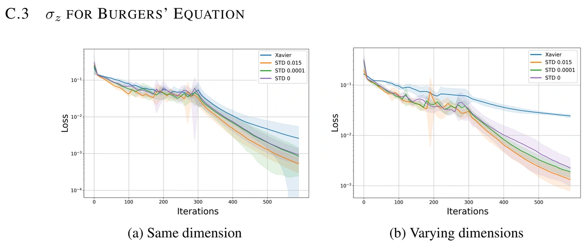
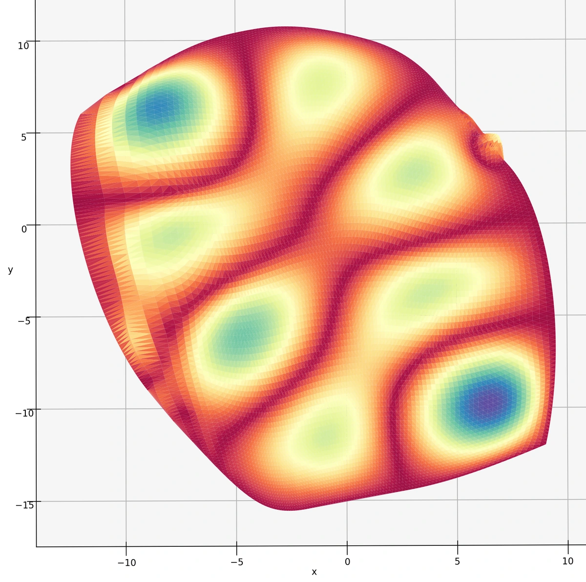
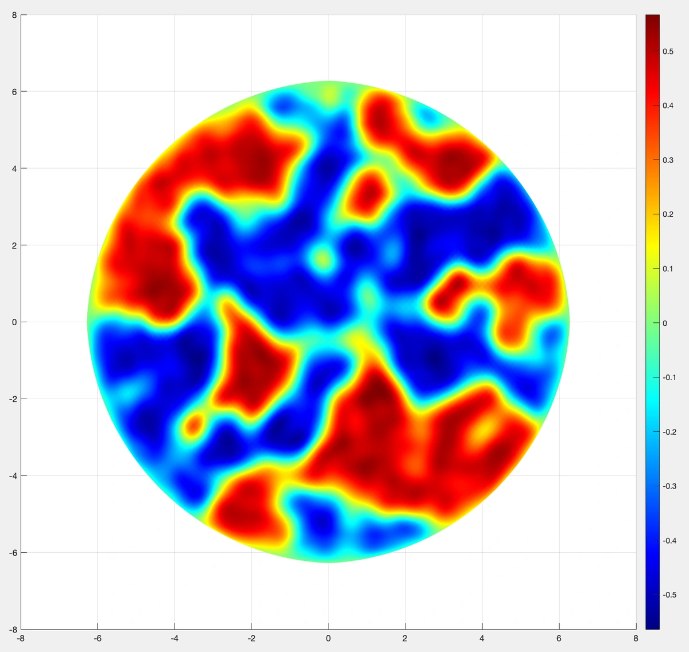

01 / RESEARCH
Mathematical analysis of deep learning, including weight initialization, signal propagation, and knowledge distillation.

Initialization and learning
Lab research introduction, 2025View full-size figureA mathematical foundation and research hub for AI and energy at KENTECH.
RESEARCH CONNECTIONS
01 / Research
Mathematical analysis, scientific machine learning and simulation connect our research.
Explore all research themesMathematical analysis of deep learning, including weight initialization, signal propagation, and knowledge distillation.

Initialization and learning
Lab research introduction, 2025View full-size figurePhysics-informed machine learning and deep numerical methods that combine neural networks with differential equations and numerical analysis.

Neural networks and numerical approximation
Lab research introduction, 2025View full-size figureMathematical models and numerical methods for physical systems, including fluid flow, heat transfer, phase-field models, and fractional dynamics.

Phase-field modeling
Lab research introduction, 2025View full-size figure02 / People
DEEP-MATH Lab is led by Hyunju Kim at KENTECH. We bring mathematical analysis, computational methods, and scientific machine learning into AI and energy research.
DEEP-MATH stands for Deep-learning Engineering and Explanatory Principles in Mathematics.
Meet the group03 / Publications
Selected publications in numerical analysis, geometric approximation and fractional differential equations.
Advances in Difference Equations · 2021 · Article 193
DOI: 10.1186/s13662-021-03355-3Numerical Methods for Partial Differential Equations · 34(6) · 2079–2112
DOI: 10.1002/num.22277Computer Methods in Applied Mechanics and Engineering · 254 · 334–352
DOI: 10.1016/j.cma.2012.09.00904 / Join
Discuss a research question, collaboration or visit with the group.
Research enquiries & visits